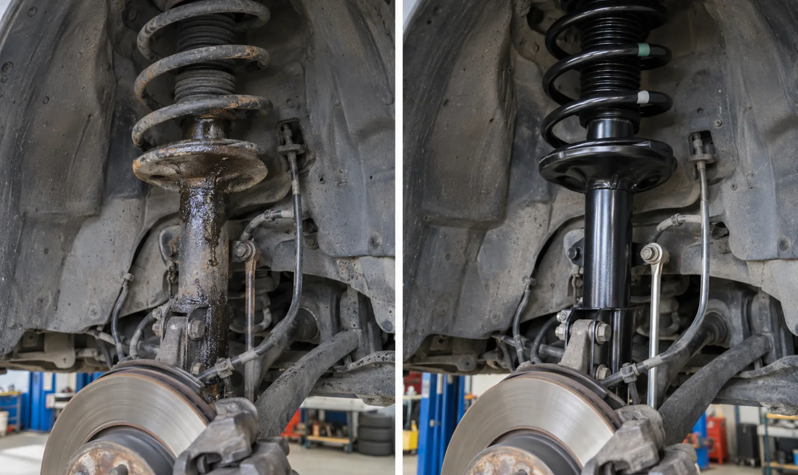

Clunks and rattles
Noise over bumps or while turning can come from worn or loose suspension and steering components.
Suspension and steering
Jaden can assess common suspension and steering concerns for cars and light trucks, including clunks, vibration, poor handling, uneven tire wear, and visibly worn or leaking components.
416-577-8237jadensauthoanddetailing@gmail.com
Common symptoms
Noise over bumps or while turning can come from worn or loose suspension and steering components.
Excessive bouncing, leaning, wandering, or a rough ride may need further inspection.
Abnormal wear can relate to suspension, steering, alignment, tire, or wheel concerns.
Possible work
Mobile or shop
Selected suspension work may be suitable for mobile service when the surface, space, and vehicle allow safe lifting and support. More involved work may need the Port Credit shop. Jaden confirms the location after reviewing the vehicle and symptoms.
Request an appointment
Include the year, make and model, vehicle location, the sound or handling concern, which side it seems to come from, and whether it happens over bumps, while braking, or while turning.
Request a quote
Appointments and service location are confirmed directly with Jaden.